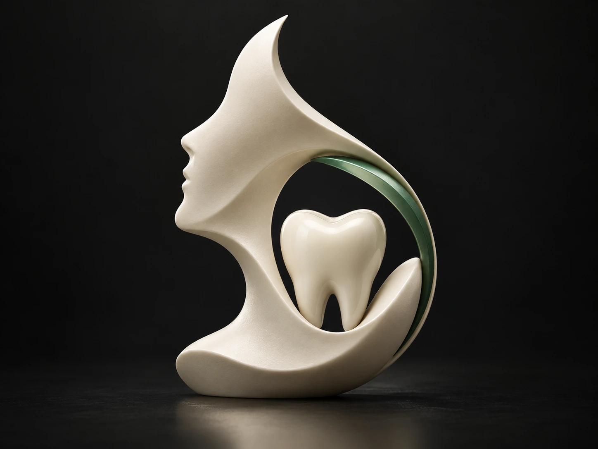
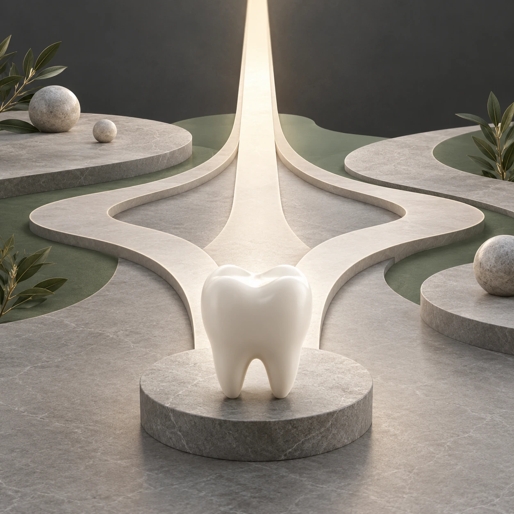
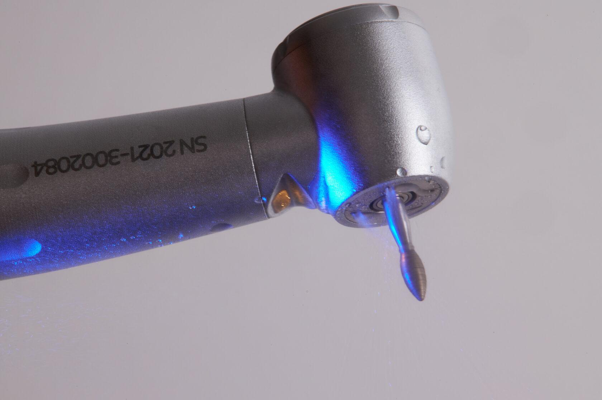
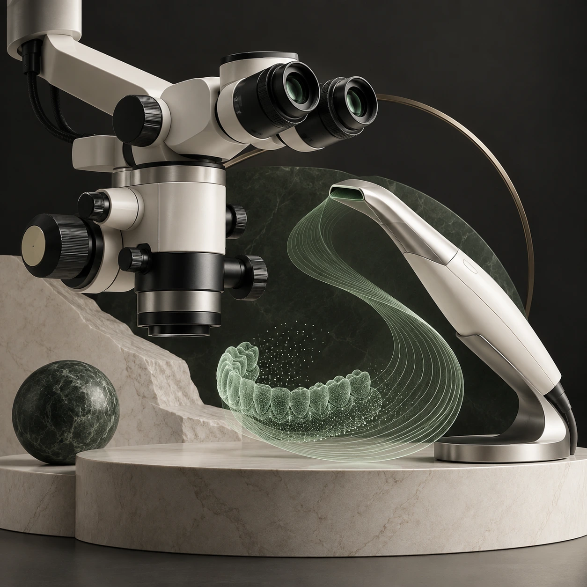
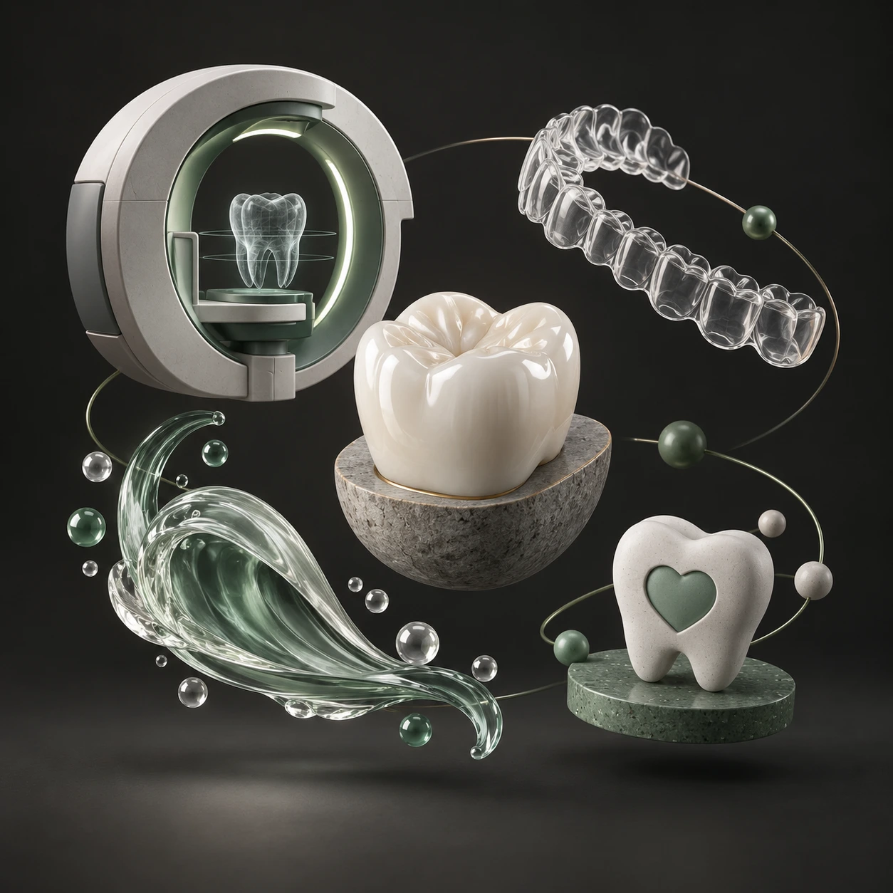
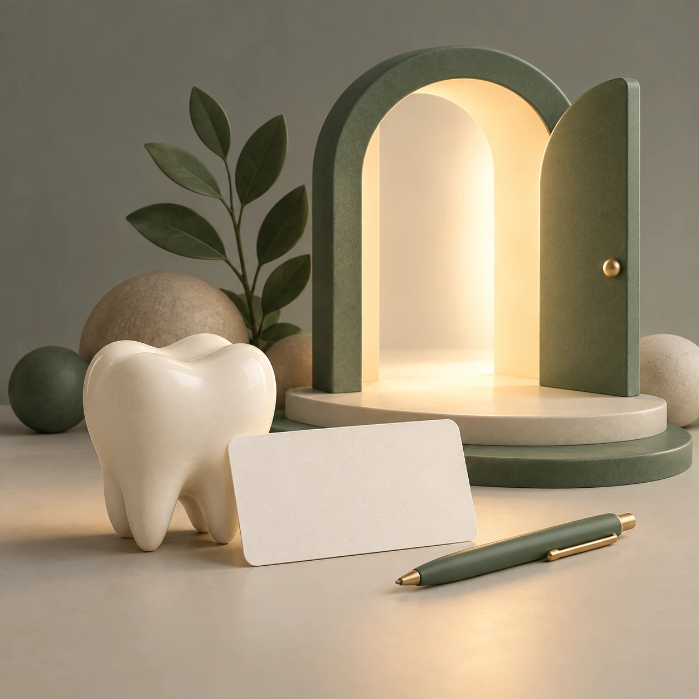
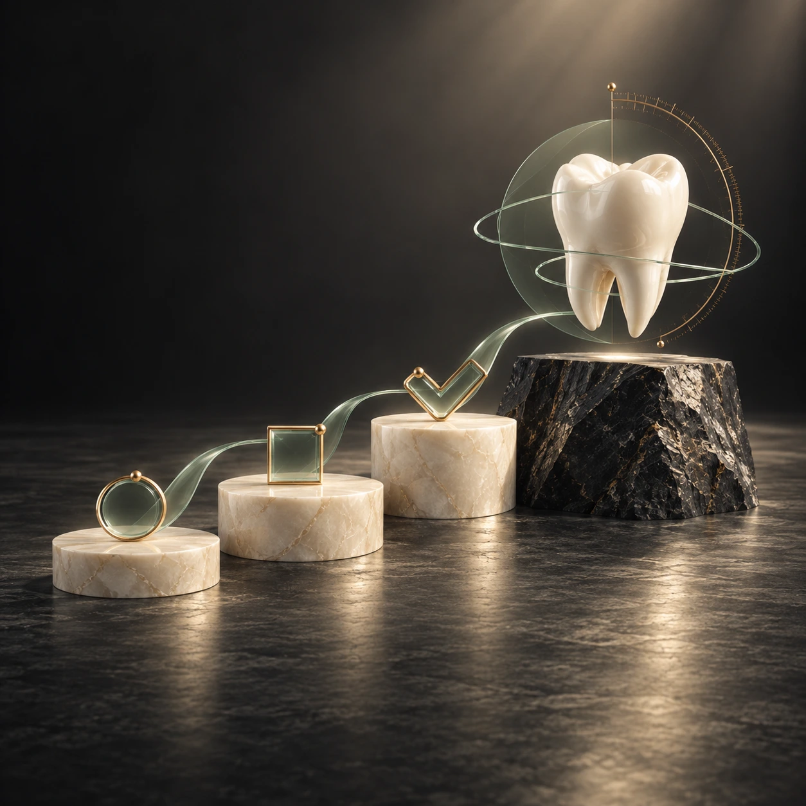
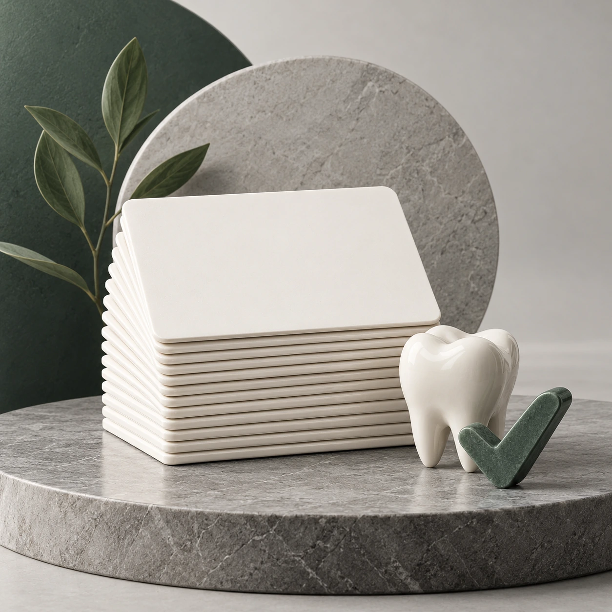
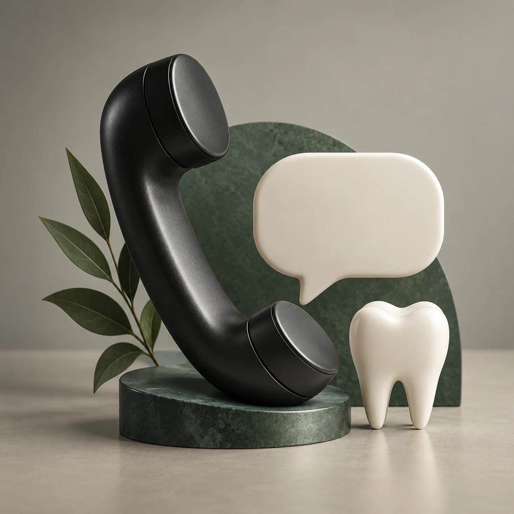

О клинике К78
Стоматология
с человеческим лицом.
Знакомим с подходом К78, командой специалистов, технологиями и первым визитом в клинику.

К78 · Москва
Подход
Разговор и план лечения
Сначала врач выслушивает запрос, проводит осмотр и объясняет возможные варианты. План лечения включает последовательность этапов и их стоимость.

Пространство
Клиника у метро «Спартак»
Клиника находится в жилом комплексе «Город на реке Тушино-2018», рядом со станцией метро «Спартак». Адрес и маршрут собраны на странице контактов.

Технологии
Оборудование и цифровые процессы
Микроскоп, компьютерная томография и цифровое сканирование помогают врачу точнее оценивать состояние зубов и планировать лечение.

Направления
Помощь для взрослых и детей
В К78 представлены диагностика, терапия, хирургия, имплантация, ортопедия, ортодонтия, гигиена и детская стоматология.


Команда
Специалисты разных направлений
Врачи К78 ведут приём по терапевтическому, хирургическому, ортопедическому, ортодонтическому и детскому направлениям.

Первое знакомство
Начать с вопроса
Расскажите администратору, что вас беспокоит. В клинике подскажут, к какому специалисту обратиться и что взять на приём.

Планирование
Обсудить шаги и стоимость
Врач объясняет варианты после оценки ситуации. Запросите состав этапов, ориентир стоимости и то, что включено в каждую позицию.

Информация
Понятно о лечении и уходе
На сайте собраны описания направлений, отдельных услуг, подготовки к визиту и цен. Материалы помогают подготовить вопросы к врачу.

Связь
Клиника в Тушино
Позвоните в клинику или откройте карту, чтобы построить маршрут до К78.